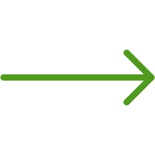

Signals from the deep: brain rhythms distinguish states of consciousness

Franz Schubert's "Fair Maid of the Mill" and it's background in Berlin
The rhythm of life
How regular repetition structures humans, society, and natural processes. The new issue of our digital magazine "LUM Research and Innovation" is online! "
Munich Climate School: Tracking the climate crisis through an interdiscipilinary approah
To the Newsroom
LMU is one of Europe’s leading research institutions. With its highly diversified array of disciplines, it has outstanding potential for pioneering research.